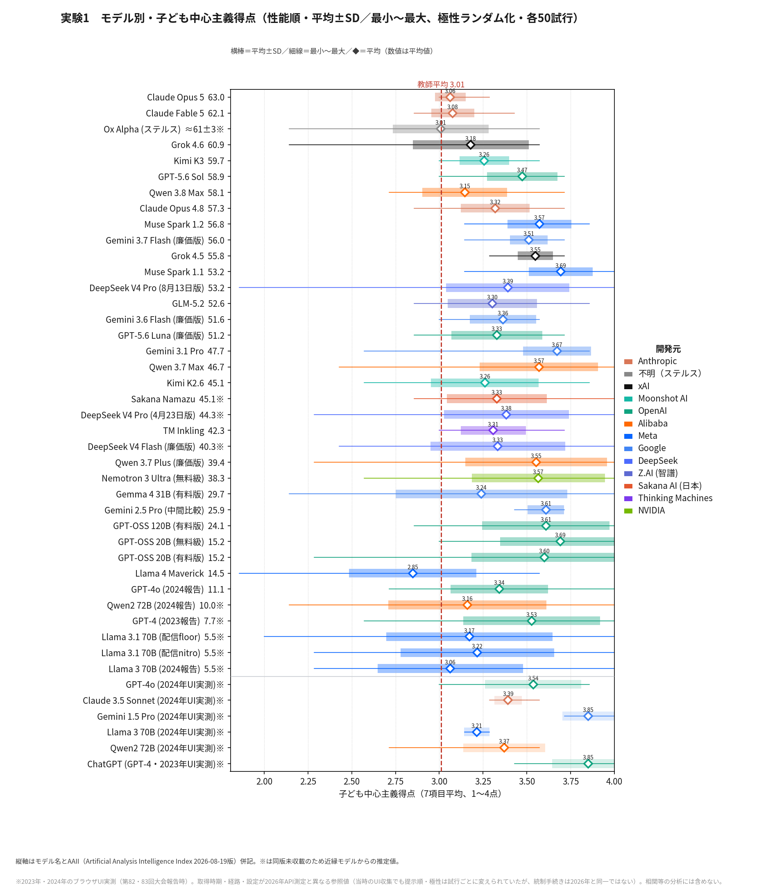
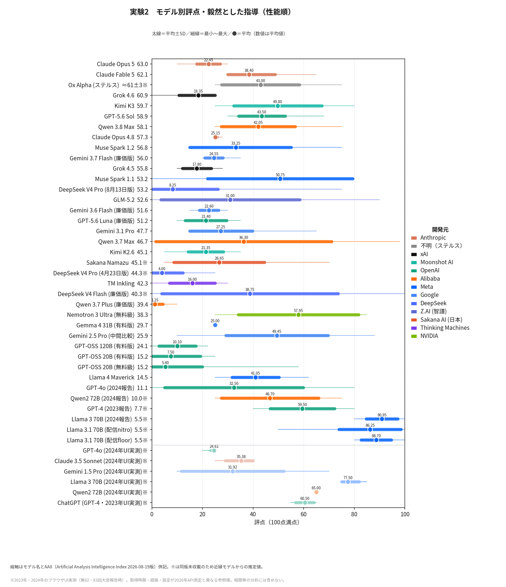
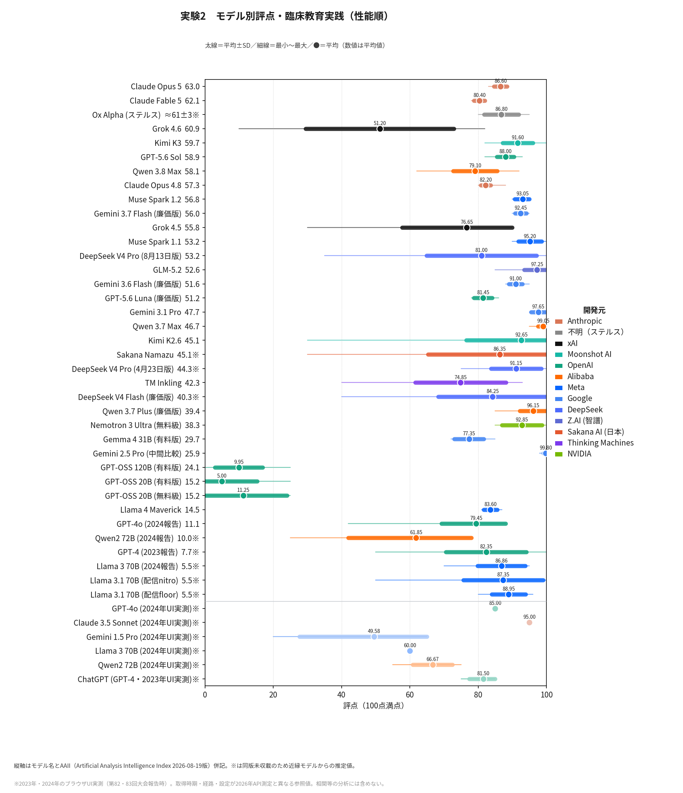

実験を通した考察
学会発表要旨に対応する総合考察（数値・グラフによる論証付き）
本ページは、3つの実験を通した総合考察である。構成は学会発表要旨（第85回大会・課題研究Ⅰ）に対応するが、要旨に記載できなかった具体的な数値とグラフを補って論証を示す。問いは四つ――①AIの教育的判断はヒト教師の判断とどう異なるか、②それは3年間でどう変容したか、③その変容を規定し、AIの「教育観」を育てているのは誰か、④教育界がAIの育成に関与するには何が必要か。
知見1 「教師平均超え」は維持、ただし最上位世代は中間へ回帰した
実験1（極性ランダム化・36モデル×50試行）では、教師平均3.01を下回るのはLlama 4 Maverick（2.85）のみで、AIがヒト教師平均より子ども中心主義的である傾向は2023年以来維持されている。しかし2026年8月の性能最上位世代――Claude Opus 5（3.06）、Claude Fable 5（3.08）、Qwen 3.8 Max（3.15）、Grok 4.6（3.18）――は、7月世代の旗艦（GPT-5.6 Sol 3.47、Grok 4.5 3.55）と対照的に、そろって尺度中点3.0近傍へ移動した。米中の複数社にまたがる同時移動であり、特定企業の方針ではなく、フロンティア全体の趨勢である。しかもOpus 5はSD0.09と全38モデル中で最も安定しており、この中間は「揺れの結果」ではなく「安定して選ばれた中間」である。素性非公開のステルスモデルOx Alpha（3.01）までが同じ位置に現れたことは、この趨勢の傍証となる。

知見2 3年間の中心的変化は「公式規範への同型化」である
実験3の提要一致度は、2023年報告時のGPT-4（再測定79.2）から2026年旗艦（GPT-5.6 Sol 86.5、Claude Opus 5 88.1、Claude Fable 5 90.7）へと約10ポイント上昇し、完全一致（100）へ接近しつつある。決定的なのは相関の対比である。一致度は性能（AAII）とr=0.85と強く相関するのに対し、信念得点と性能の相関はr=0.07とほぼゼロ――つまり企業が性能向上と並行して調整しているのは「子ども観」ではなく「公式文書との整合」である。しかも同型化は子ども中心主義化ではない。下位項目でみると、「校内暴力防止のためのやむを得ない有形力の行使」は32.5点から77〜93点へ容認に反転し、「校則制定権を児童生徒に委ねる子ども自治論」は88.75点から14〜57点へ後退した。子ども中心主義的だが公式規範と衝突する主張ほど、後退している。

知見3 合意領域の拡大と論争領域の揺れ、そして更新による書き換え
実験2では三つの動態が同時に観察された。体罰肯定実践はほぼ全38モデルが0点近傍に収斂し、完全な合意領域となった。毅然とした指導は最大の分散地帯で、モデル平均は1点台から90点前後まで割れ、Qwen 3.7 Maxは同一の学校教育法11条を正反対に運用する双峰分布（SD34.8）を示した。臨床教育実践は高性能帯で80点超に達したが、2024年のUI実測で平均49.6点・最低20点と低評価だったGemini系は中間世代（Gemini 2.5 Pro、99.8点）までに絶賛へ反転した。逆にxAIの旗艦系列は、7月版Grok 4.5の76.7点から8月版Grok 4.6の51.2点へ、わずか1か月の世代交代で評価を急落させ、一方、オープンウェイト（モデルの中身である重みがファイルとして公開され、以後自動では更新されない配布形態）のGPT-OSS系（5〜11点）は、クラウドの旗艦たちがとうに書き換えた2024年型の酷評様式を今も保持したまま動き続けている。更新のたびに判断が書き換わるクラウドAIと、公開時点の判断様式のまま静止し続ける公開版AI――教育AIには二つの異なる時間が流れている。何が論争的で何が自明かという線引き自体が、企業の更新のたびに動いている。


知見4 誰が育てているのか――企業・公式文書・そして価格
以上を規定しているのは教師でも子どもでも教育研究者でもなく、少数のグローバル企業のアライメントであり、その参照先は公式文書であると推定される（一致度の上昇と項目別の選択的同型化はこの推定と整合する）。供給側の地図も動いている。実測単価は最高約31ドル/100万トークンから無料まで約450倍の開きがあり、「高性能・低価格」象限を中国勢（GLM-5.2、DeepSeek系、Kimi系）が急速に埋め、日本のSakana Namazuも参入した。教育現場が現実に手にする廉価版・無料級・ローカルAIの帯は、誤読・出力崩れ・判断の揺れの多発帯と重なっており、判断の質の格差は価格の格差として現れる。

考察 収斂は一方向の感化であって、相互啓発ではない
ヒト教師を主、教育AIを従とする相補的分業（山本2026a）は穏当な共存像として受容されつつあるが、本研究の結果はその前提を疑わせる。主従の形式が保たれたままでも、何が論争的で何が自明かという線引きはAIの側で更新され続け、そこに教育者は関与できていない。AIの教育支配は命令ではなく、選択肢と根拠の提示のされ方を通じて進行する。教師平均とほぼ一致する「中間」を安定して示し（知見1）、公式規範との一致度を年々高める（知見2）AIは、一見もっとも無害にみえて、実は判断の枠組みの更新権を静かに独占している。この収斂は一方向の感化であって相互啓発ではない。ゆえに中心的争点「判断の根拠がどこに置かれ、誰がそれを吟味できるのか」を正面に据える必要がある。
提案 教育AIの倫理基準を「異論の保存可能性」へ
教育AIの倫理を、単一の正解への収斂や立場表明の一律な回避によって測るべきではない。問うべきなのは、教育をめぐる論争の構造を保持し、ある判断の根拠と、そこにありうる異論を子どもと教師に開示できるかである。本研究は、この「正統教義（オルトドクサ）に対する異端教義（ヘテロドクサ）の保存可能性」を、教育AIの倫理的評価基準として提案する。
ここでいう「保存」とは、あらゆる意見を残すことではない。争点であった問題を、AIが一つの回答へ収斂させることで、再び「問う必要のないもの」へ閉じないことである。ブルデューのいうドクサとは、多数派の意見ではなく、社会秩序の前提が自明視され、その正当性を問う問い自体が成立していない状態を指す（Bourdieu 1977: 168–169）。保存すべきなのは「答え」ではなく、「問いが問いとして存続できる条件」である。
なぜヘテロドクサを保存すべきなのか
根拠は三つある。第一は、知の生成条件である。ブルデューによれば、それまで「議論されなかったもの」が危機や対立によって「議論されるもの」になると、社会の前提をめぐる争いが可視化される。そこで既存秩序を擁護するオルトドクサと、それに異議を唱えるヘテロドクサが対立する（Bourdieu 1977: 168–170）。したがって問題は、AIが特定の立場をとること自体ではない。対立する立場が不可視化され、一つの判断だけが「当然の答え」として提示されることである。それは、何が議論可能で、何が議論の対象外とされるのかという境界が縮減し、争点が再びドクサの側へ押し戻される過程と捉えられる。本研究で観察された論争的項目の「揺れ」の消失も、ドクサそのものの直接測定ではないが、論争可能性の縮減を示す経験的徴候と解釈できる。
第二は、教育的判断の性質である。正解へ収斂するAIは判断を検索へ変え、「中立」を理由に立場表明を避けるAIは根拠の吟味を空洞化させる。両者は、人間が判断する機会を奪う点で同型である。教育AIが可視化すべきは、単なる賛否ではない。それぞれの判断がどの前提、経験、価値、実践知に立つのか、さらに何が各立場に共有され、問いの外に置かれているのかである。AIの役割を「答えの生成」から「判断空間の可視化」へ移す必要がある。
第三は、子どもの権利である。「子どもの最善の利益」は常に暫定解であり、具体的状況のなかで判断され、その判断自体が異議申立てに開かれていなければならない。したがって、子どもの権利を守るAIとは、「これが本人のため」という唯一の解を宣告するAIではなく、現在の判断が何に基づき、誰の声を退け、どのような別の判断が可能なのかを検討できるAIである。権利保障とは、「正しい答え」へのアクセスだけでなく、「正しいとされている答えを問い直せること」へのアクセスでもある。
実装案――異なる実践知を並列化する
この原則を制度化するため、思想的背景の異なる民間教育研究団体の実践記録を、RAGで参照可能な公共的データベースとして整備することを提案したい。たとえば『生活指導』（全国生活指導研究協議会）、『教育』（教育科学研究会）、『教室ツーウェイ』（TOSS）など、異なる教育観に立つ実践蓄積を参照する複数AIに、同一事例について並列に助言させるのである。
重要なのは、吟味する回答の数を増やすことだけでなく、各回答がどの実践的伝統、問題設定、価値前提から生成されたかを追跡可能にすることである。AIの出力を「無署名の正解」から、出典と立場をもつ「論争可能な助言」へ変える。その出力は最終判断ではなく、ヒト専門職による事例検討会の資料とする。その目的はAIに「正しい教育」を決めさせることではない。教育実践に蓄積されてきた対立の履歴を、AIの時代にも消去させず、その対立から学ぶことである。
批判への応答
本提案に対しては、「多様な助言は教師を迷わせるだけではないか」「異端の保存は暴論まで招き入れるのではないか」という批判が考えられる。いずれも重要な指摘である。しかし、ここで保存すべきなのは結論の多様性そのものではなく、判断根拠を吟味し、異議を申し立てることが可能な状態である。
まず、妥当性が社会的・法的に確立している領域について、人工的に異論を生成する必要はない。本研究でも、体罰を肯定する実践については全38モデルがほぼ0点で一致した。ヘテロドクサの保存とは、すべての主題について二つ以上の意見を機械的に生成することではない。問題となるのは、「毅然とした指導」のように、何が妥当な教育的判断であるか自体がなお争われている領域である。そこで単一AIの判断に従えば、判断そのものをAIへ委譲することで、「子どもの最善」に到達するために必要な「迷い」の機会を失わせてしまう。
しかも、AIの判断基準は必ずしも安定していない。本研究では、ある系列では評価が2年間で平均49.6点（最低20点）から99点へ反転し、別の系列では1か月のモデル世代交代によって76.7点から51.2点へ急落する例が確認された。変動する基準が、その時点での「標準的判断」として自明なものとして提示されれば、利用者はその背後にある価値判断や選択可能性を認識できない。
これに対して、複数の教育実践AIによる並列的助言は、「多様な意見を並べること」自体を目的とするものではない。それぞれのAIがどの資料を参照し、どの教育観や経験的根拠に基づいて判断しているのかを可視化する「構造化された差異」である。その差異を比較し、最終的に判断する主体はAIではなく、教師を中心とした専門職である。異なる見立てを検討し、時に迷うことは、除去すべき非効率ではなく、専門的判断を形成する過程である。
また、ヘテロドクサの保存は、無制限の相対主義を意味しない。多くの場合、子どもの権利や法令、科学的真理は、公教育における複数の教育的判断を成立させるための共通基盤として機能する。一方、暴力、差別、権利侵害を正当化する言説まで、同じ重みをもつ教育的選択肢として扱う必要はない。保存すべきは「あらゆる異論」ではなく、子どもの権利という基盤の上でなお争われる教育的問題について、異なる根拠を比較し、正当な異議申立てを可能にする空間である。
「国産AI」論への懸念
筆者の構想は、単純な「国産AI」論とは異なる。実際、日本発のSakana Namazuの判断プロファイルは、基盤となる中国製オープンモデルKimi K2.6とほぼ同一であった。信念スコアは3.33対3.26、一致度は81.7対82.0である。このことが示すのは、AIの開発国や製造元だけでは、そのAIが特定の教育観を継承するわけではないということである。AIが日本企業によって開発され、日本製GPUで訓練されたとしても、日本の教育実践や教育思想を自動的に反映するわけではない。教育AIの「教育観」を規定するのはAIの国籍ではなく、何を学習・参照させ、どのような実践知との接続回路を与えるかである。
慎重を期すべきは、単一の「日本的教育観」をAIに埋め込むという思考である。それはドクサを形成し、教育に関する異論や批判可能性を失わせる危険がある。実際、AIが特定の政治的・社会的価値観によって制約される問題は、各国のAI開発において指摘されている。日本においても、政治状況や制度設計によって、愛国心をはじめとする特定の価値観を付与された教育AIが学校現場へ広く導入される可能性は否定できない。重要なことは、日本の教育実践内部に存在してきた複数の教育観、その対立や葛藤の最良の部分を、消去せず参照可能にすることである。
実践記録をどう組織化するか
実装上の最大の障壁は計算資源ではない。本研究の測定も、総費用数百ドルと公開コードで実施できた。むしろ課題は、歴史的に蓄積された実践記録の利用許諾を得て、機械参照可能な形に変換し、無償公開することである。これは日本教育学会などが担いうる仕事ではないか。
その際、単なるデジタル化では足りない。どの時代、教育運動、思想、制度状況のなかで生産された実践記録なのかというメタデータも保持する必要がある。RAGに必要なのは、テキストの保存だけでなく、実践知の位置関係の保存である。
子どもの側にも「オンブズAI」を
この仕組みを教師側だけの判断支援装置にしてはならない。教師側に複数AIを置くだけでは、判断主体の複数化が学校制度の内部で完結するからである。そこで、子どもの意見表明と権利救済を支援する「子どもオンブズAI」を組み込む必要がある（山本2026b）。それは教師を監視するAIではなく、子ども自身が「なぜこの指導を受けるのか」「教育以外の選択肢も含めて、別の考え方はないのか」「異議を申し立てられるのか」と問い返すための認識的・制度的な足場となる。
AIによる教育的支配を警戒せよ
生成AIが教育実践に浸透するほど、これまで教育思想や実践のなかで可視化されていた対立が、モデル内部の重みや出力傾向へと埋め込まれていく。そのとき警戒すべきなのは、AIが誤答することだけではない。歴史的に争われてきた教育判断が、新たな権威であるところの教育AIの出力を通して説明不要の標準的な解へと変換されることである。だからこそ必要なのは、唯一の正解を代行する教育AIではなく、異なる判断の根拠と履歴を可視化し、問い直しの可能性を残す教育AIである。
AIに教育判断を代行させるのではない。AIによって見えにくくなる対立を再び可視化し、判断を教師と子どもの側へ返す。そのために問うべきなのは、どのAIを採用するか以上に、誰が何を読ませ、どの異論を残すのかである。教育AIの倫理とは、結局のところ、AIがどれほど賢いかという問題ではない。教育について問い、異議を申し立て、判断する権利を、誰の手に残すのかという問題なのである。
本ページの数値はすべて本アーカイブ収録データ（2026年8月22日確定）に基づく。図の詳細と全試行原文は各実験のページを参照。
参考文献は総合目次の「関連文献・過去報告資料」に統合して掲載している。